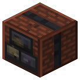
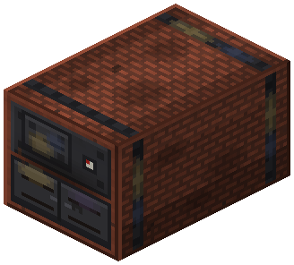
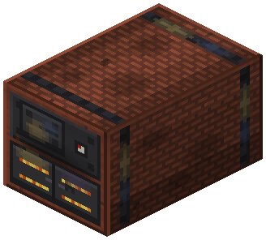

Газовая печь


Ванильная печь на газе: до 4 предметов за 10 с. Газ трубой (коксовый 100 mB/предмет, древесный 200). Сосуд 2x2x3.
Обычная печь, только на газе: плавит и печёт всё то же, что ванильная (рецепты печи один в один), без подкладывания угля. Газ — трубой: коксовый (коксовая камера), древесный (пиролизная печь), нефтяной (колонна, скважина), биогаз. Керосин и пар не берёт. Тепла на предмет — как у угля в печи (200 тиков топки RC): коксового газа 100 mB, древесного 200, нефтяного 46, биогаза 13. Газ списывается в начале партии; не хватает на 4 — печёт на сколько хватает, нет совсем — «нет топлива».
Сосуд: узел лежачего сосуда 2x2x3. Ставь узел лицом к себе — это левый нижний блок торца; ещё 11 корпусов газовой печи (4 за крафт: 5 кирпичных блоков + 4 железные пластины) — на 1 вправо, на 1 вверх и на 3 вглубь. Без сосуда стоит. Собранная печёт до 4 предметов за 10 с (вчетверо быстрее ванильной). Трубы и воронки — к торцам (любой из 8 блоков переднего или заднего торца), только через торцевую грань; бока и крыша глухие. Сырьё воронкой в торец; готовое печь сама кладёт в сундук или воронку вплотную к торцу (воронку носиком в печь не трогает — это вход).
Параметры
| Эпоха | 2 — Пар и механика |
|---|---|
| Многоблок | нет |
| Привод | топка / своё |
| Баки, mB | 16000 |
| что делает | ванильная печь на газе, лежачий сосуд 2x2x3: до 4 предметов за 10 с (1.57.9, docs/gas-furnace.md) |
| энергия на входе | газ трубой: коксовый 100 / древесный 200 / нефтяной 46 / биогаз 13 mB на предмет (= уголь в печи) |
| из чего | кирпичные блоки, печь, бронзовая труба, железные пластины; 11 корпусов |
Числа
| газовая печь 1.57.9: тепла газа на предмет (тики топки RC) | 200 тик |
|---|---|
| газовая печь: партия (до 4 предметов в собранном сосуде) | 200 тик |
| газовая печь: бак газа | 16000 mB |
Кого кормит
- машины Zavod её продукт не едят
Как устроено (из кода)
Газовая печь (M49, 1.57.9): обычная печь на газе вместо угля руками. Рецепты - ванильные (FurnaceRecipes), один в один. Узел лежачего сосуда 2x2x3 (Vessel, кирпичный корпус gas_furnace_shell): без сосуда стоит, собранная гонит до 4 предметов за партию batchTicks (как ванильная печь на один слот). Топливо - газ трубой: коксовый, древесный, нефтяной, биогаз. Тепло на предмет heatPerItem тиков топки RC - как уголь в ванильной печи (1600 / 8 = 200), не дешевле (calc gasfurnace.vs_coal). Газ списывается в начале партии. Слоты: 0 сырьё, 1 выход. Бак 0 - газ.
Сборка
Без сосуда печь стоит. Собранная печёт до 4 предметов за партию; газ — трубой в торец.

Узел — газовая печь: ставь лицом к себе. Это левый нижний блок торца.

Нижний ряд корпусов: на 1 вправо и на 3 вглубь (5 блоков).

Верхний ряд — ещё 6 корпусов. Сосуд 2x2x3 собран: торец оживает. Трубы и воронки — к торцам, бока и крыша глухие.


Бледное — поставлено на прошлых шагах.